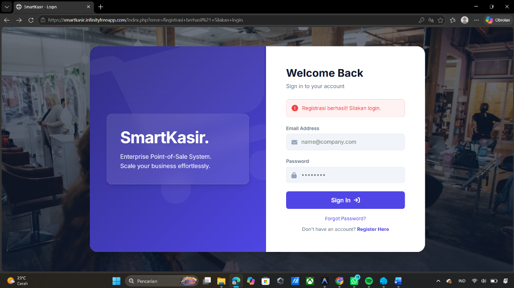

Incident Report
| Sistem Target | : SmartKasir Web Application |
| Role Pengujian | : Kasir (Authentication & Checkout) |
| Metode Pengujian | : Black Box Testing (EP & BVA) |
| Incident ID | : INC-SK-MOD3-01 |
| Severity Level | : Minor |
| Status Terkini | : Closed / Resolved |
Incident Details & Metadata
Halaman 2 dari 4Dokumen ini merupakan laporan resmi pencatatan anomali fungsional (incident defect) yang ditemukan pada saat pelaksanaan pengujian Black Box Functional Testing (Boundary Value Analysis & Equivalence Partitioning) terhadap sistem antarmuka autentikasi dan pendaftaran akun kasir SmartKasir.
| Field | Detail |
|---|---|
| Incident ID | INC-SK-MOD3-01 |
| Related Test Case ID | TC-EP-03 (dan beririsan dengan TC-BVA-04) |
| Test Basis |
• Modul 3 SQA – Functional Testing: Boundary Value Analysis & Equivalence Partitioning • Dokumen Kebutuhan Perangkat Lunak (SRS-SmartKasir-Auth: RQ-001 & RQ-002) • Skenario: Registrasi Pengguna Kasir Baru dengan Kredensial Valid |
| Reported By | Muchammad Dwi Ferdi Ilham Arifin (NIM: 202310370311292 • PKPL-B) |
| Date Found | 22 Oktober 2026 |
| Application Version | SmartKasir v1.0.0-prod (Build 2026.10) |
| Environment |
• Hosting URL: https://smartkasir.infinityfreeapp.com/ • Local Server: Laragon (Apache 2.4.54, PHP 8.1.10 / 8.2, MySQL 8.0) • Klien: Google Chrome 129.0.6668.71 (Official Build) / Windows 11 Home 64-bit |
| Report Status | Closed / Resolved (Perbaikan telah diverifikasi pada tanggal 23 Oktober 2026) |
?error= bukan ?success=. Hal ini memicu tampilan kotak alert berwarna merah dengan tanda seru peringatan, yang secara visual memberikan indikasi bahwa registrasi gagal padahal akun kasir berhasil dibuat di database.
| Version | Revision Date | Updated By | Change Description |
|---|---|---|---|
| 1.0 | 22/10/2026 | Muchammad Dwi Ferdi Ilham Arifin | Inisiasi laporan insiden saat defect salah penanganan alert registrasi ditemukan pada pengujian TC-EP-03. |
| 1.1 | 23/10/2026 | Muchammad Dwi Ferdi Ilham Arifin | Verifikasi penerapan perbaikan kode pada register.php dan index.php; status insiden diperbarui menjadi Closed/Resolved. |
Detailed Incident Report (8 Sections)
Halaman 3 dari 4register.php, data pengguna tersimpan dengan baik di database. Namun, sistem mengalihkan pengguna kembali ke halaman Login (index.php) dengan query parameter ?error=Registrasi+berhasil!+Silakan+login. alih-alih parameter status sukses. Hal ini menyebabkan halaman login menampilkan kotak notifikasi berwarna MERAH dengan ikon tanda seru kesalahan (danger alert), bertolak belakang dengan kalimat pesan di dalamnya. Fenomena ini menciptakan keraguan psikologis pada pengguna kasir (persepsi kegagalan registrasi).
- Layanan web server Apache dan basis data MySQL aktif normal (dapat diakses via
https://smartkasir.infinityfreeapp.com). - Pengguna belum dalam keadaan terautentikasi (belum login).
- Pengguna membuka peramban web dan mengakses URL halaman pendaftaran
register.php. - Pengguna telah menyiapkan dataset valid: Nama kasir, format email valid yang belum pernah terdaftar sebelumnya di tabel
users, password valid minimal 6 karakter, dan peran Kasir.
- Buka peramban Google Chrome dan buka URL:
https://smartkasir.infinityfreeapp.com/register.php. - Pada kolom Nama Lengkap, masukkan:
Budi Santoso (Kasir). - Pada kolom Email Address, masukkan:
budi.kasir@smartkasir.com. - Pada kolom Password, masukkan:
Kasir2026!. - Pada kolom Konfirmasi Password, ketikkan ulang:
Kasir2026!. - Pilih role sebagai
Kasir. - Klik tombol Sign Up / Daftar Sekarang.
- Amati query string pada address bar dan amati warna kotak notifikasi yang tampil pada halaman login (
index.php).
- Data akun kasir baru berhasil di-insert ke dalam database MySQL dengan password terenkripsi.
- Pengguna dialihkan ke URL sukses:
index.php?success=Registrasi+berhasil!+Silakan+login. - Halaman login menampilkan kotak pesan berwarna HIJAU (
alert-success) dengan ikon centang sukses, memberikan kepastian afirmatif bahwa registrasi telah selesai.
- Data akun kasir berhasil masuk ke database.
- Pengguna dialihkan dengan query string error:
https://smartkasir.infinityfreeapp.com/index.php?error=Registrasi+berhasil!+Silakan+login. - Halaman login merender kotak alert berwarna MERAH (
alert-danger) dengan ikon tanda seru kesalahan bertuliskan: "Registrasi berhasil! Silakan login." (kontradiksi semantik visual).
Justifikasi Teknis: Defect ini tidak menyebabkan kegagalan sistem inti (crash), tidak merusak struktur basis data, dan akun yang didaftarkan tetap dapat digunakan untuk login. Namun, false-negative visual ini mengganggu kejelasan alur pengalaman pengguna (UX), berpotensi memicu kepanikan pengguna baru kasir, dan memicu submission ganda (spamming tombol submit) yang berujung pada error email duplikat.

?error=Registrasi+berhasil!+Silakan+login. sehingga memicu kotak merah alert-danger.
• Tautan Akses Bukti: https://smartkasir.infinityfreeapp.com/index.php?error=...
• Berkas Fisik: c:\laragon\www\SMARTKASIR\evidence_INC-SK-MOD3-01.png
Akar Permasalahan (Root Cause Analysis):
register.php, setelah eksekusi query SQL pendaftaran kasir berhasil, baris pengalihan halaman ditulis menggunakan parameter ?error= alih-alih ?success=:
// Potongan kode bermasalah pada register.php:
header("Location: index.php?error=Registrasi berhasil! Silakan login.");
exit();
Tindakan Perbaikan (Corrective Action):
register.php menjadi ?success=:
// Perbaikan pada register.php:
header("Location: index.php?success=" . urlencode("Registrasi berhasil! Silakan login."));
exit();
index.php menampilkan komponen alert-success (berwarna hijau) saat mendeteksi $_GET['success'].3. Hasil Verifikasi Ulang: Pengujian regresi pada lingkungan produksi membuktikan bahwa notifikasi registrasi kini telah berwarna hijau dengan ikon centang sukses. Status dinyatakan RESOLVED / CLOSED.
Severity Guide & Classification Matrix
Halaman 4 dari 4Severity (tingkat keparahan) adalah metrik objektif yang mengukur besarnya dampak teknis dan operasional yang ditimbulkan oleh suatu defect terhadap integritas data, stabilitas perangkat lunak, dan kelangsungan alur bisnis. Klasifikasi keparahan menjadi fondasi utama dalam memprioritaskan alokasi sumber daya pemecahan masalah (bug fixing) serta menjadi acuan kelayakan rilis aplikasi ke lingkungan produksi.
| Severity Level | Definisi SQA Standar | Contoh Kasus pada SmartKasir |
|---|---|---|
| Critical | Defect dengan dampak ekstrem yang menyebabkan sistem berhenti total (crash), hilangnya integritas basis data transaksi, terhentinya alur kerja bisnis utama tanpa adanya workaround alternatif, atau terdapat celah keamanan fatal. |
• Proses checkout kasir crash dan data keranjang belanja hilang permanen. • SQL Injection yang memungkinkan pihak luar mengakses seluruh data penjualan tanpa autentikasi. |
| Major | Defect yang merusak fungsionalitas bisnis utama atau fitur penting, namun sistem secara umum masih dapat berjalan atau memiliki solusi sementara (workaround). |
• Perhitungan potongan diskon promo kasir menghasilkan angka keliru. • Fungsi pencetakan struk pembayaran thermal kasir error, tetapi data transaksi tetap berhasil dicatat di database. |
| Minor | Defect pada fitur sekunder, kesalahan respons status/feedback antarmuka, format pesan yang salah arah atau membingungkan, namun tidak menghentikan alur fungsional sistem. |
• INC-SK-MOD3-01: Notifikasi registrasi kasir berhasil namun ditampilkan dalam kotak merah kesalahan. • Pagination tabel produk salah menghitung jumlah halaman namun data tetap akurat. |
| Cosmetic | Defect kosmetik murni atau ketidaksempurnaan tata letak visual mikro yang sama sekali tidak mempengaruhi alur, fungsi, atau pemahaman pengguna terhadap sistem. |
• Kesalahan ejaan minor (typo) pada teks hak cipta footer. • Padding tombol reset kasir selisih 2 pixel. • Warna bayangan card login sedikit terlalu pudar pada monitor kontras rendah. |
| Kriteria Penilaian | Evaluasi Terhadap Insiden INC-SK-MOD3-01 |
|---|---|
| Apakah Sistem Lumpuh? | Tidak. Server web dan database beroperasi normal. Data kasir baru berhasil di-insert ke dalam tabel users secara utuh. Defect bukan level Critical. |
| Apakah Menghalangi Login? | Tidak. Akun yang baru saja didaftarkan tetap dapat digunakan untuk login ke sistem kasir tanpa kendala teknis. Defect bukan level Major. |
| Apakah Sekadar Masalah Kosmetik? | Tidak. Warna merah memiliki makna semantik internasional sebagai kesalahan/kegagalan. Munculnya alert merah untuk kejadian berhasil menciptakan ambiguitas serius dan berisiko memicu pendaftaran ganda oleh kasir. Masalah ini melampaui level Cosmetic. |
| Kesimpulan Klasifikasi |
Tepat Diklasifikasikan Sebagai MINOR Defect ini berdampak nyata terhadap kepuasan dan kejelasan pengalaman pengguna (UX Feedback) tanpa melumpuhkan kemampuan operasional sistem, sehingga tepat berada pada tingkat Minor. |
Laboratorium Informatika • Fakultas Teknik • Universitas Muhammadiyah Malang • 2026